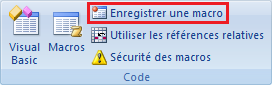
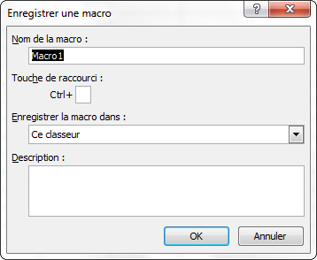
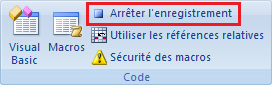
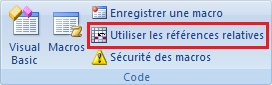
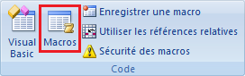
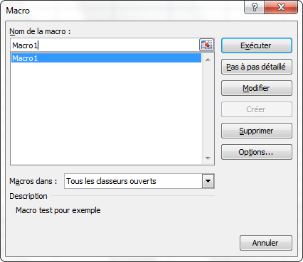

Chapitre 1 - Première macro, utilisation de l'enregistreur de macro
Un programme écrit en VBA est souvent appelé, par abus de langage, une macro. Dans un premier temps, une macro peut être créée en utilisant l'enregistreur de macros, qui ne nécessite aucune connaissance du langage VBA.
L'enregistreur de macro est un outil accessible notamment sous Excel et permettant d'écrire du code VBA à partir d'opérations effectuées manuellement dans le logiciel. A l'image d'une caméra, toute la séquence d'actions effectuées entre le début et la fin de l'enregistrement est traduite en instructions VBA et stockée dans une
procédure
VBA sans arguments, qui pourra être exécutée à nouveau à l'identique.
L'enregistreur de macro sous Excel permet donc de générer facilement du code VBA et de découvrir les mots clés et syntaxes à employer pour écrire ensuite directement ses propres programmes.
Pour vérifier que l'outil développeur est bien activé, aller dans les options d'Excel. Dans l'onglet STANDARD, la case « Afficher l'onglet Développeur dans le ruban » doit être cochée, comme dans la vidéo ci-dessous.
Enregistrer une macro - Paramétrage de la macro
Cliquez sur le bouton ENREGISTRER UNE MACRO :

La fenêtre ci-dessous apparaît à l'écran et vous permet de paramétrer la macro qui va être créée c'est-à-dire :

de préciser son nom dans le champ : Nom de la macro ;
d'y associer si besoin un raccourci clavier afin de faciliter son lancement futur : Touche de raccourci ;
de préciser à quel classeur elle sera rattachée par l'intermédiaire du menu déroulant Enregistrer la macro dans ;
et enfin d'y associer une note explicative Description.
Le menu déroulant Enregistrer la macro dans : vous propose trois options :
Ce classeur, qui permet d'enregistrer la macro dans le classeur actif ;
Nouveau classeur, qui permet d'enregistrer la macro dans un nouveau classeur ;
Classeur de macros personnelles : la macro est enregistrée dans un classeur spécial appelé PERSO.XLS. Ce classeur est ouvert automatiquement lors du lancement d'Excel et ses macros sont disponibles dans tous les classeurs ouverts.
Si vous souhaitez qu'une macro soit utilisable dans Excel quels que soient les classeurs ouverts, enregistrez la dans votre classeur de macros personnelles (liste déroulante ENREGISTRER LA MACRO DANS). Pour ce cours, nous ferons les enregistrements dans le classeur courant.
Lancement de l'enregistrement
Une fois votre macro paramétrée suivant votre besoin, cliquez sur le bouton OK.
L'enregistrement est alors lancé et dès lors, toutes les actions que vous faites dans Excel sont enregistrées, traduites en code VBA puis sauvegardées dans une procédure portant le nom que vous avez spécifié à l'étape précédente (Macro1 dans l'exemple précédent).
Arrêt de l'enregistrement
Une fois que vous avez réalisé toutes les actions que vous souhaitiez enregistrer, l’arrêt de l’enregistrement se fait en cliquant sur le bouton ARRET DE L'ENREGISTREMENT .

N’oubliez pas d’arrêter l’enregistrement d’une macro ! Dans le cas contraire vos actions continueraient à être enregistrées et vous ne seriez pas en mesure de relancer cette macro.
Pour sauvegarder votre classeur Excel et votre macro, le fichier doit être enregistré dans un format compatible avec la prise en compte des macros. Lorsque vous enregistrez votre fichier, sélectionnez le type « Classeur Excel (prenant en charge les macros) ».
Modes de repérages des cellules
Il existe deux modes de repérage des cellules dans un programme VBA, le mode absolu et le mode relatif.
Dans l’exercice précédent, vous avez utilisé le mode absolu c'est-à-dire que quel que soit l’état de votre système au moment où vous lancez votre macro, les textes seront toujours écrits dans les mêmes cellules (positionnement absolu).
Dans certains cas, il est utile que le placement des actions de la macro soit déterminé de manière relative par rapport aux actions précédentes. On veut, par exemple, qu’une action soit faite toujours 2 cellules en dessous de celle sélectionnée à ce moment-là. Le positionnement est donc relatif à la cellule sélectionnée précédemment.
Le bouton ci-dessous permet de faire un choix entre ces deux modes de repérage. Ce choix dépend, bien entendu, des propriétés attendues de la macro que l’on est en train d’enregistrer.

Vous pouvez passer d'un mode de repérage à l'autre avant et pendant l'enregistrement d'une macro.
Vérifiez toujours le mode dans lequel vous vous trouvez au lancement de l’enregistrement et avant d’effectuer la moindre action sans quoi votre macro pourrait avoir un comportement différent de celui auquel vous vous attendiez car non enregistrée dans le mode adéquat.
Exécuter une macro
Pour exécuter une macro déjà enregistrée, il faut ouvrir le gestionnaire des macros, en cliquant sur ce bouton :

La fenêtre présentée ci-dessous s’ouvre alors :

Il faut sélectionner dans la liste la macro désirée et cliquer sur le bouton EXECUTER.
Dans cet exemple, seule la macro Macro1 est disponible.
Le menu déroulant Macros dans vous permet de faire un tri dans les macros disponibles et de n’afficher, par exemple, que celles enregistrées dans votre classeur personnel.
L’enregistreur de macro permet de manière rapide et simple de créer des macros. Cependant une macro ainsi créée ne s’exécutera que sur un ensemble de cellules données et possèdera des fonctionnalités limitées. Pour pouvoir créer des macros propres à ses besoins, efficaces et interactives, la connaissance du langage VBA est nécessaire. Il sera présenté dans les chapitres suivants.